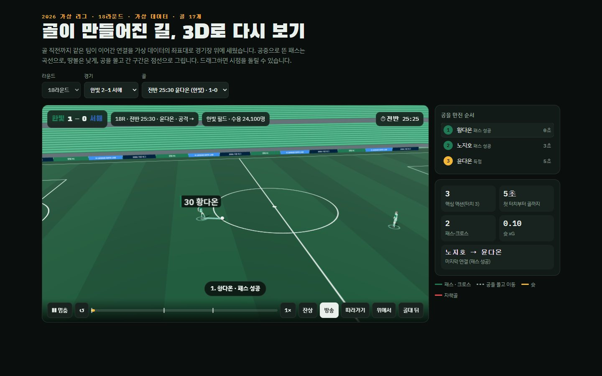
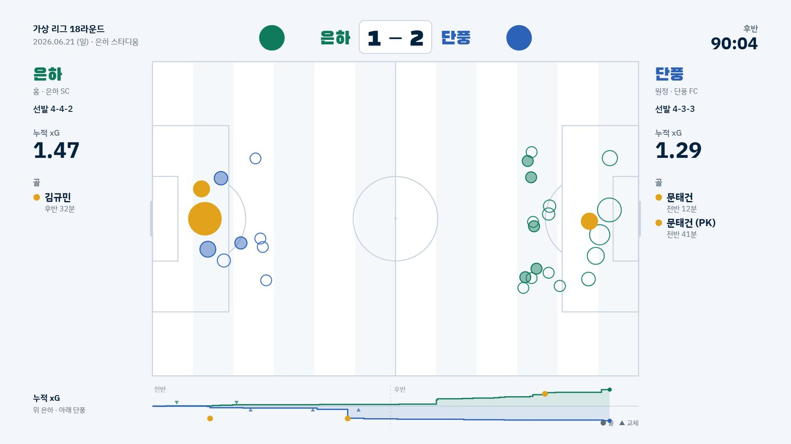
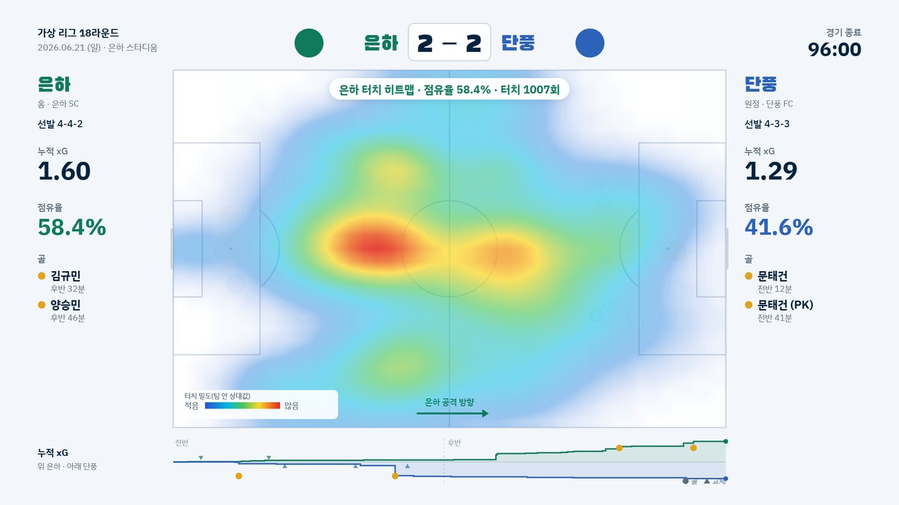
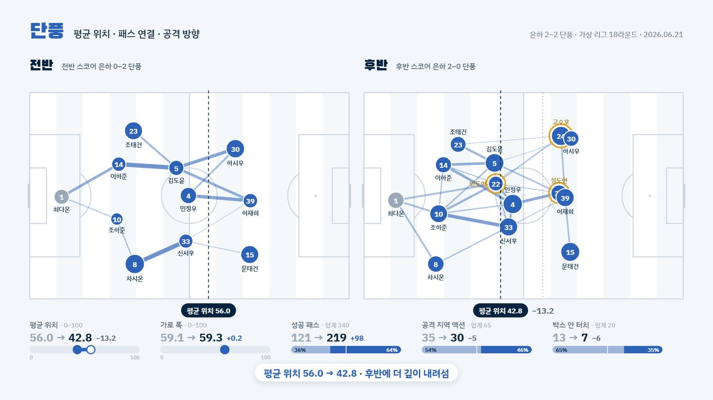
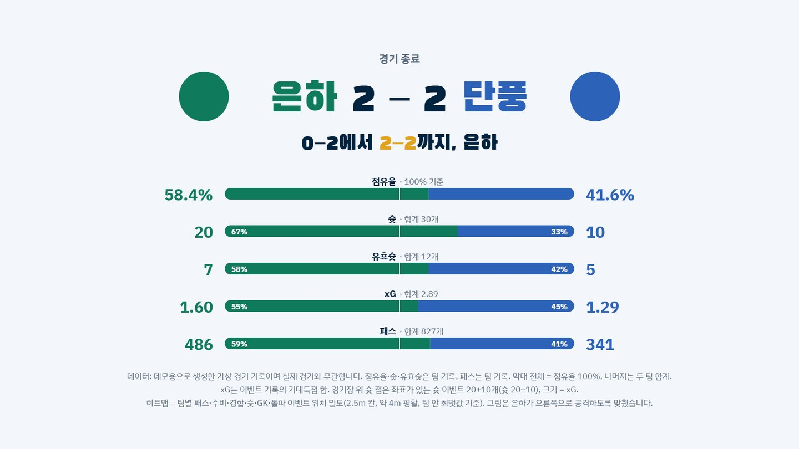

K리그 데이터 랩
K리그 경기 이벤트 기록으로 3D 골 리플레이, 매치 스토리, 모델 노트, 전술 모션을 만들고 추출부터 화면까지 혼자 맡았습니다.
공개용 페이지라서 아래 화면은 실제 데이터 대신, 같은 형식으로 생성한 가상 리그 데이터로 다시 만들었습니다. 팀·선수·기록은 모두 가상입니다.









문제
이벤트 기록은 사람이 그대로 읽기 어려운 긴 표입니다. 전·후반마다 공격 방향이 바뀌고 기록 방식의 차이도 있어, 그대로 그리면 장면이 틀어집니다.
한 일
- 읽기 전용 연결로 DB에서 추출하고, 공격 방향을 경기별로 맞추는 보정표를 만들었습니다.
- 득점 확률이 평소 수준 아래로 떨어지는 지점까지 거슬러 올라가 골 장면의 시작을 정했습니다.
- xG, 행동가치, MoM, 승률 모델을 1~120번 경기로 학습하고 121~150번 경기로 채점했습니다.
배운 점
우리 모델이 기준선보다 못한 결과도 그대로 적었습니다. 그래서 경기 리뷰에는 공식 xG를 쓰고, 우리 xG는 위치 가치 지도 학습에만 씁니다.
모델 4종xG, 행동가치, MoM, 경기 중 승률
120 / 30경기학습 경기와 채점 경기를 나눠 처음 보는 경기로만 성적을 냄
시점 4개3D 리플레이의 방송·따라가기·위에서·골대 뒤